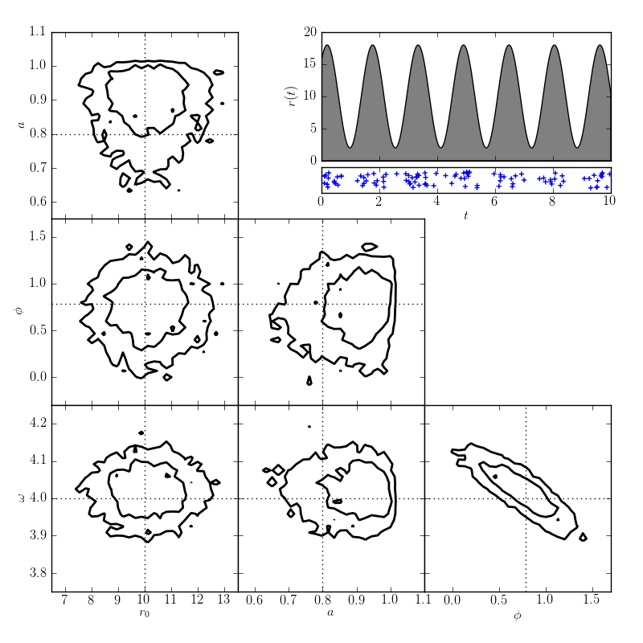

Arrival Time Analysis¶
This plot shows the results of an MCMC model to periodic arrival time data
Number of observed photons: 104
@pickle_results: using precomputed results from 'arrival_times.pkl'
# Author: Jake VanderPlas <vanderplas@astro.washington.edu>
# License: BSD
# The figure produced by this code is published in the textbook
# "Statistics, Data Mining, and Machine Learning in Astronomy" (2013)
# For more information, see http://astroML.github.com
import numpy as np
from matplotlib import pyplot as plt
# Hack to fix import issue in older versions of pymc
import scipy
import scipy.misc
scipy.derivative = scipy.misc.derivative
import pymc
from astroML.plotting.mcmc import plot_mcmc
from astroML.decorators import pickle_results
#------------------------------------------------------------
# Create some data
np.random.seed(1)
N_expected = 100
# define our rate function
def rate_func(t, r0, a, omega, phi):
return r0 * (1 + a * np.sin(omega * t + phi))
# define the time steps
t = np.linspace(0, 10, 10000)
Dt = t[1] - t[0]
# compute the total rate in each bin
r0_true = N_expected / (t[-1] - t[0])
a_true = 0.8
phi_true = np.pi / 4
omega_true = 4
r = rate_func(t, r0_true, a_true, omega_true, phi_true)
# randomly sample photon arrivals from the rate
x = np.random.random(t.shape)
obs = (x < r * Dt).astype(int)
print "Number of observed photons:", np.sum(obs)
#----------------------------------------------------------------------
# Set up our MCMC model
r0 = pymc.Uniform('r0', 0, 1000, value=10)
a = pymc.Uniform('a', 0, 1, value=0.5)
phi = pymc.Uniform('phi', -np.pi, np.pi, value=0)
log_omega = pymc.Uniform('log_omega', 0, np.log(10), value=np.log(4))
# uniform prior on log(omega)
@pymc.deterministic
def omega(log_omega=log_omega):
return np.exp(log_omega)
@pymc.deterministic
def rate(r0=r0, a=a, omega=omega, phi=phi):
return rate_func(t, r0, a, omega, phi)
def arrival_like(obs, rate, Dt):
"""likelihood for arrival time"""
N = np.sum(obs)
return (N * np.log(Dt)
- np.sum(rate) * Dt
+ np.sum(np.log(rate[obs > 0])))
Arrival = pymc.stochastic_from_dist('arrival',
logp=arrival_like,
dtype=np.float,
mv=True)
obs_dist = Arrival('obs_dist', rate=rate, Dt=Dt, observed=True, value=obs)
model = dict(obs_dist=obs_dist, r0=r0, a=a, phi=phi,
log_omega=log_omega, omega=omega,
rate=rate)
#------------------------------------------------------------
# Compute results (and save to a pickle file)
@pickle_results('arrival_times.pkl')
def compute_model(niter=20000, burn=2000):
S = pymc.MCMC(model)
S.sample(iter=niter, burn=burn)
traces = [S.trace(s)[:] for s in ['r0', 'a', 'phi', 'omega']]
return traces
traces = compute_model()
labels = ['$r_0$', '$a$', r'$\phi$', r'$\omega$']
limits = [(6.5, 13.5), (0.55, 1.1), (-0.3, 1.7), (3.75, 4.25)]
true = [r0_true, a_true, phi_true, omega_true]
#------------------------------------------------------------
# Plot the results
fig = plt.figure(figsize=(8, 8))
fig.subplots_adjust(bottom=0.1, top=0.95,
left=0.12, right=0.95,
hspace=0.05, wspace=0.05)
# This function plots multiple panels with the traces
plot_mcmc(traces, labels=labels, limits=limits, true_values=true, fig=fig,
bins=30, colors='k', linewidths=2)
# Plot the model of arrival times
ax = fig.add_axes([0.5, 0.75, 0.45, 0.2])
ax.fill_between(t, 0, rate_func(t, r0_true, a_true, omega_true, phi_true),
facecolor='gray', edgecolor='black')
ax.xaxis.set_major_formatter(plt.NullFormatter())
ax.set_xlim(t[0], t[-1])
ax.set_ylim(0, 20)
ax.set_ylabel('$r(t)$')
# Plot the actual data
ax = fig.add_axes([0.5, 0.7, 0.45, 0.04], yticks=[])
t_obs = t[obs > 0]
ax.scatter(t_obs, np.random.random(len(t_obs)),
marker='+', lw=1)
ax.set_xlim(t[0], t[-1])
ax.set_ylim(-0.3, 1.3)
ax.set_xlabel('$t$')
plt.show()